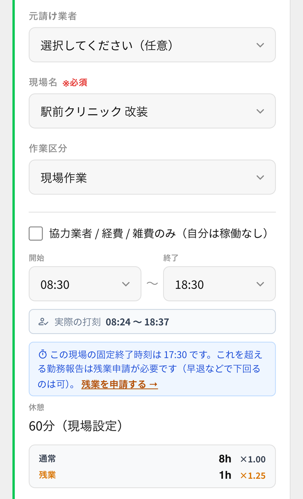

GENLINKS
内装業のためのアプリ
内装屋がつくった、現場のためのアプリ
職人はスマホで
日報だけ。
給料も原価も、
あとは自動。


日報を出すと、社長の画面に集まる
こんなこと、
ありませんか？
日報が紙やLINEで届いて、月末に書き写している
残業や休憩を合わせると、結局何時間働いたのか分からない
現場が終わるまで、儲かったのかどうか分からない
GENLINKS なら
一度入れたら、
もう書き写さない。
職人
スマホで日報を出す
現場・時間・経費・写真
自動で
給料の元に
なる数字労働時間・残業
なる数字労働時間・残業
現場ごとの
原価人件費・経費
原価人件費・経費
社長
パソコンで見るだけ
できること
01日報と出退勤
現場からスマホで、その場で出せます。選ぶところがほとんどで、文字の入力は少しです。

02給料の元になる数字
労働時間・残業・有給を自動で集計。残業は社長が承認してから反映されます。
03現場ごとの原価
人件費・経費・協力業者の請求を、現場ごとにまとめます。

ほかにも：領収書は写真を撮るだけで読み取り／見積・発注／工程表／現場チャット など
つくった人の話
自分の会社で
困っていたから、
つくりました。
職人の日報を紙やLINEで集めて、月末に書き写すのが大変でした。それを無くしたくて、自分の会社のためにつくりました。今はうちの職人28人が、毎日これで日報を出しています。
つくった人：大塚（内装業）
うちで実際に動いている数字
28人職人全員が
スマホで
スマホで
800件+毎月の
日報
日報
124件管理している
現場
現場
2026年5月から運用・数字は2026年9月時点
始め方は、かんたん
- 1お話を聞かせてください
- 2職人さんにURLを送るだけアプリストアからのインストールは要りません
- 3次の日から日報が集まります
よくある質問
スマホが苦手な職人でも使えますか？
ほとんどは選ぶだけで、文字の入力は少しです。最初の使い方はお手伝いします。
パソコンが無くても大丈夫？
社長もスマホで日報や集計を見られます。パソコンがあると表が見やすくなります。
今のやり方から移すのは大変？
職人さんにURLを送るだけで始められます。現場や職人さんの登録はお手伝いします。
まずはお試しから。
導入はお手伝いします。
GENLINKS